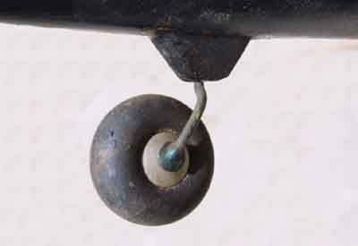
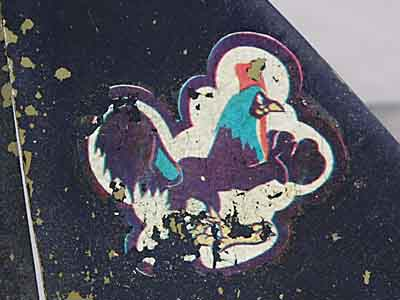

Help Solve a MysteryCan you identify this airplane?
The wingspan is 42", length is about 32". Construction is balsa and some hardwood, The finish is/was dope and tissue. It looks like a glow motor was removed to mount an electric motor for the effects shots for the movie. Unfortunately, that is really all I know. If you have any information about this model, please click here to send me some email..
Thanks,
|
|

|

|
|
| |